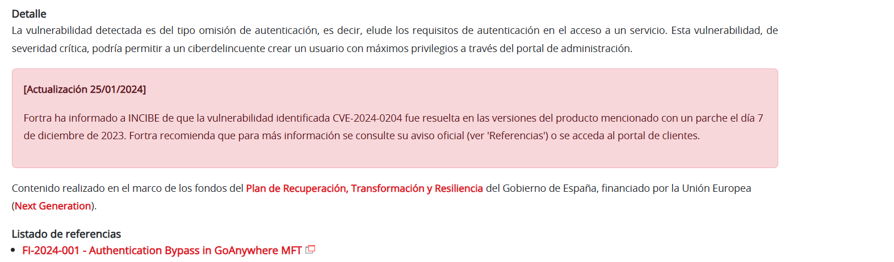
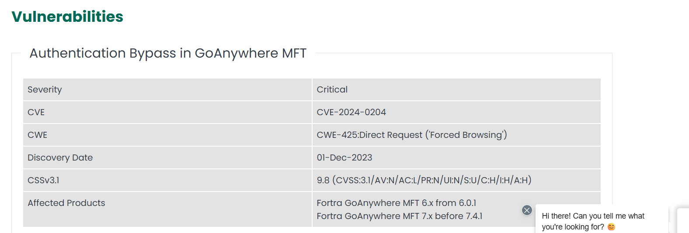
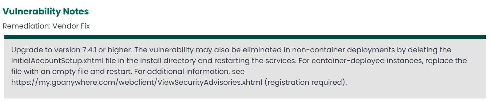
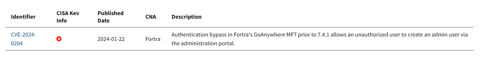
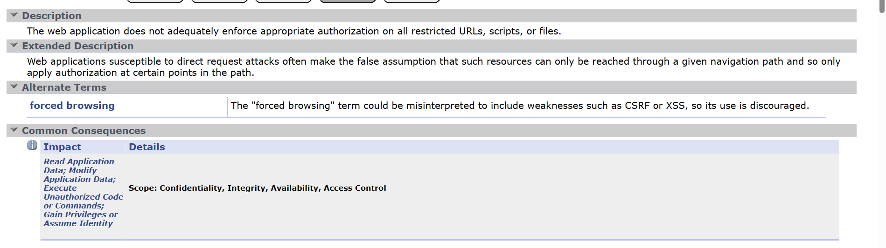
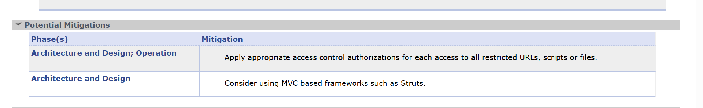
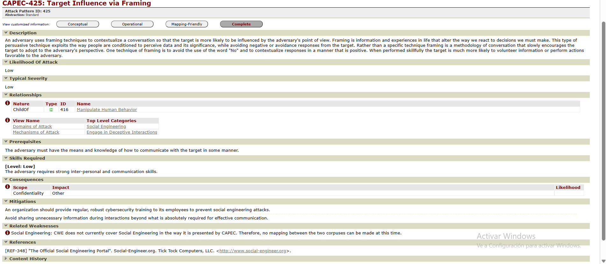

Trazado de la vulnerabilidad GoAnywhere MFT (CVE-2024-0204)¶
Objetivo del documento¶
En este documento explico el trazado que he hecho de la vulnerabilidad crítica en GoAnywhere MFT de Fortra, empezando por el aviso de INCIBE y siguiendo hasta los diferentes listados y referencias (CVE, NVD, CWE, CPE, ATT&CK, etc.).
1. Punto de partida: aviso de INCIBE¶
Lo primero que hago es entrar en el aviso de INCIBE llamado
“Vulnerabilidad crítica de omisión de autenticación en GoAnywhere MFT de Fortra”.
En este aviso veo que:
- El producto afectado es GoAnywhere MFT, de la empresa Fortra.
- El problema es una omisión de autenticación en el portal de administración, es decir, se puede saltar el login.
- Un atacante remoto, sin usuario ni contraseña, podría llegar a crear un usuario administrador en el sistema.
- Se trata de una vulnerabilidad crítica, con una puntuación CVSS muy alta (en torno a 9.8) según las referencias de la CVE.

2. Aviso del fabricante (Fortra)¶
Desde el propio aviso de INCIBE voy al apartado de referencias y sigo el enlace al aviso oficial de Fortra sobre GoAnywhere MFT.
En el aviso del fabricante compruebo varios puntos importantes:
- Se indica claramente el identificador de la vulnerabilidad: CVE-2024-0204.
- Se confirma que el fallo permite un bypass de autenticación en el portal de administración.
- Se detallan las versiones vulnerables, que incluyen versiones de la rama 6.x y 7.x anteriores a la 7.4.1.
- Se indican las versiones corregidas y se recomienda actualizar a 7.4.1 o superior.
En el mismo aviso también se comentan medidas de mitigación, por ejemplo:
- Actualizar lo antes posible a una versión corregida.
- Como medida temporal, restringir el acceso al recurso de configuración inicial afectado y reiniciar el servicio.


3. Consulta del CVE: CVE-2024-0204¶
Con el identificador CVE-2024-0204 busco la ficha de la vulnerabilidad en los listados públicos, tanto en CVE como en la NVD (National Vulnerability Database).
En la ficha de la CVE veo que:
- Describe la vulnerabilidad como un authentication bypass en el portal de administración de GoAnywhere MFT.
- Indica que un atacante no autenticado puede aprovechar un fallo en el proceso de configuración inicial para crear un usuario administrador.
En la ficha de la NVD se amplía la información técnica:
- La puntuación CVSS v3.x es de 9.8, clasificada como crítica.
- El vector de ataque indica que:
- El ataque es remoto (por red).
- La complejidad es baja.
- No se necesitan privilegios ni interacción del usuario.
- El impacto en confidencialidad, integridad y disponibilidad es alto.
- También aparecen referencias a la CWE relacionada y a los CPE que identifican las versiones vulnerables del producto.

4. Debilidad subyacente: CWE¶
En la información técnica que consulto se relaciona esta vulnerabilidad con una debilidad del tipo acceso forzado a recursos, concretamente CWE-425: Forced Browsing.
Cuando reviso la ficha de CWE-425 en la web de Mitre, se explica que:
- Se trata de una situación en la que un atacante accede a páginas o recursos que deberían estar protegidos, simplemente conociendo o adivinando la URL o la ruta.
- El problema aparece cuando el sistema no comprueba correctamente si el usuario está autenticado o tiene permisos antes de mostrar ese recurso.
Relaciono esta descripción con lo que pasa en GoAnywhere MFT: el atacante consigue llegar al asistente de configuración inicial y, desde ahí, puede crear un usuario administrador aunque el sistema ya esté configurado.


5. Marcos y patrones de ataque (ATT&CK / CAPEC)¶
Aunque no siempre se da un CAPEC concreto, sí encuentro que esta vulnerabilidad encaja dentro de la táctica de acceso inicial del marco MITRE ATT&CK, en la técnica:
- T1190 – Exploit Public-Facing Application: explotación de una aplicación expuesta a Internet para conseguir acceso inicial.
GoAnywhere MFT suele estar publicado como servicio accesible desde la red, así que explotar CVE-2024-0204 encaja muy bien con esta técnica, ya que se ataca directamente la interfaz web del producto.
En las fuentes que reviso no siempre se menciona un identificador CAPEC concreto para esta vulnerabilidad, así que en el trazado indico que se relaciona con explotación de aplicaciones web expuestas, pero sin un patrón CAPEC específico en las referencias consultadas.
